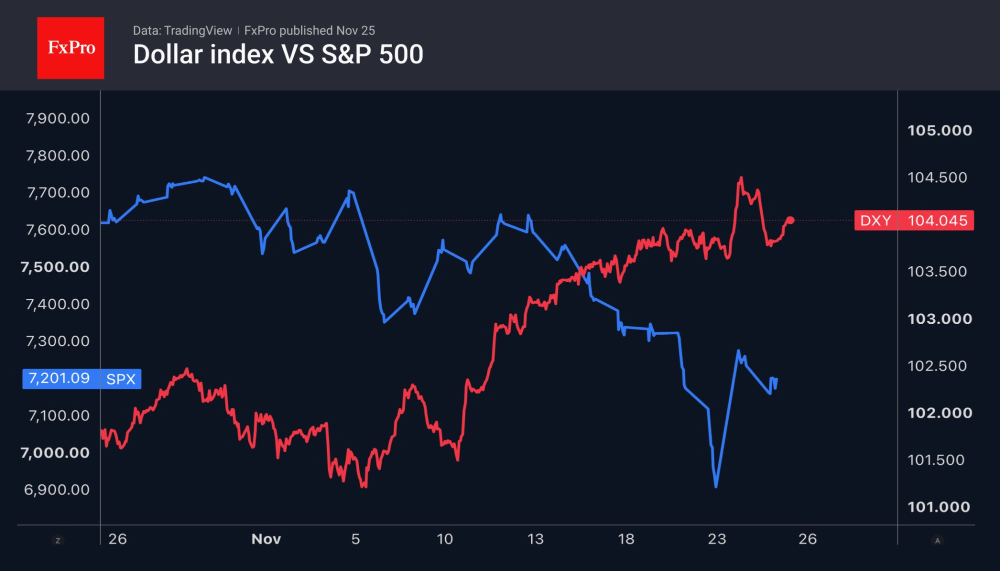
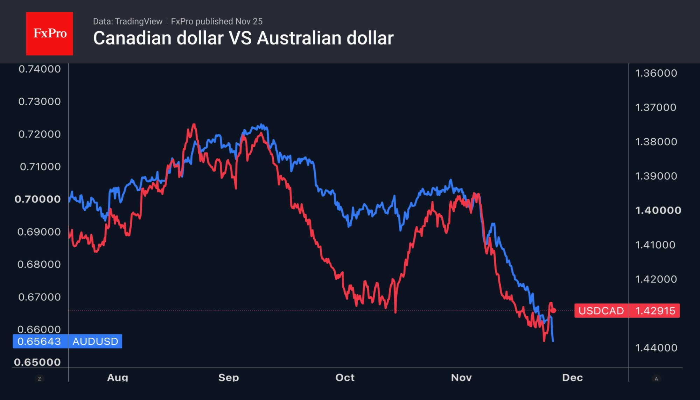

SEO
Meta Title: Loonie rallies on Macklem as Aussie slips despite CPI
Meta Description: USDCAD tumbled to 1.4292 on Macklem's hawkish remarks, while AUDUSD fell to 0.6564. In our view, the dollar is increasingly tied to equities.
Commodity currencies part ways
- The Australian and Canadian dollars have diverged.
- The greenback is becoming increasingly tied to the stock market.
The US dollar is becoming increasingly dependent on the stock market. Although the Conference Board's consumer confidence index rose to its highest level since early 2025, the greenback retreated as equity indices fell. Investors concluded that what matters most for the S&P 500 is whether AI can generate profits commensurate with the money poured into it, not the drama at Nvidia's helm.
Investors remain worried about the fallout from an AI crash for the US economy, and parallels are being drawn with the dot-com bust. Yet the far greater scale of investment in artificial intelligence and the larger share of equities in household net worth (35% versus around 27%) suggest the blow would be heavier this time.
Either way, the market narrative is that cooling enthusiasm for AI will mean both a slowdown in the US economy and a slower pace of Fed tightening. Both are negative for the US dollar. The question is when. For now, the link between EURUSD and equity indices is growing stronger.
The euro is drawing support from the Ifo business climate index, which has climbed to its highest level in more than three years, and from the French National Assembly's approval of amendments to the 2026 budget. Getting lawmakers to sign off on the country's main financial plan for 2027 will be far harder, which continues to weigh on EURUSD.
Meanwhile, reports that the White House is preparing new tariffs went largely unnoticed in the currency market. According to people familiar with the matter cited by Bloomberg, the final duties will not exceed the levels set in US trade deals with individual countries, and there will be no blanket rate.
The Canadian dollar posted its best daily performance in more than three months after hawkish remarks from Tiff Macklem. The Bank of Canada governor expects high energy prices to feed through to inflation more quickly in 2027. That prompted the futures market to price in more monetary tightening and sent USDCAD tumbling.
The Australian dollar, by contrast, failed to capitalise on a jump in October inflation: headline CPI rose from 4.3% to 4.9% year on year, while underlying inflation climbed from 3.6% to 3.8%, with a 0.5% rise on the month. Investors sold into the AUDUSD rally.
What to watch
Base case: in our view, the dollar remains hostage to the stock market, while among commodity currencies the hawkish Bank of Canada gives CAD an edge over AUD.
Risk: a return of AUDUSD above 0.6661 (the 19 November low) and USDCAD above 1.4380 would break this picture.
Upcoming: US PCE and GDP today; the account of the ECB's October meeting and US Thanksgiving on 26 November. Check the economic calendar for more events.
The FxPro Analyst Team
Charts

Source: TradingView, as of 25 November 2026.
Alt text: Line chart from late October to 25 November 2026: the US Dollar Index DXY (red line, right scale) has retreated to 104.045 from a peak near 104.7, while the S&P 500 index (blue line, left scale) stands at 7,201.09 after rebounding from 6,900.

Source: TradingView, as of 25 November 2026.
Alt text: Line chart from August to November 2026: AUDUSD (blue line, left scale) has fallen to 0.65643, while USDCAD (red line, inverted right scale) has dropped to 1.42915.
Links
- the drama on Nvidia's bridge → "A dead cat bounce in the Nasdaq-100?", 24.11.2026 → https://fxpro.news/market-overview/a-dead-cat-bounce-in-the-nasdaq-100/
- parallels are being drawn with the dot-com bust → "As the AI bubble deflates, so do hawkish dollar bets", 23.11.2026 → https://fxpro.news/market-overview/as-the-ai-bubble-deflates-so-do-hawkish-dollar-bets/
- EURUSD (instrument page) → https://fxpro.news/quotes/eurusd/
- weigh on EURUSD → "EURUSD is clutching at straws", 18.11.2026 → https://fxpro.news/market-overview/eurusd-is-clutching-at-straws/
- USDCAD (instrument page) → https://fxpro.news/quotes/usdcad/
- Australian dollar → "Central banks are keeping a close eye on the Fed", 19.11.2026 → https://fxpro.news/market-overview/central-banks-are-keeping-a-close-eye-on-the-fed/
- AUDUSD (instrument page) → https://fxpro.news/quotes/audusd/
- Check the economic calendar for more events. → https://fxpro.news/economic-calendar/